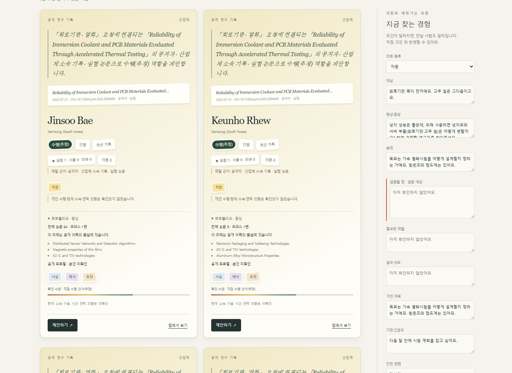

선택 완료 B · 이유·근거 우선
사람보다 먼저,
추천된 이유를 읽습니다.
같은 질문, 같은 후보 7명. 정보의 순서만 바꿔 비교했습니다.
A이름·역할 우선
누구인지 먼저 구분한 뒤
추천 이유와 근거를 읽습니다.
B이유·근거 우선 선택
왜 추천됐는지 먼저 비교한 뒤
그 경험을 가진 사람을 확인합니다.
캡처의 확인 수준 비율은 이전 표현이며, 현재는 참여 기록·수행 추정·본인 미확인으로 구분합니다. 비율은 실제 본인 확인 결과가 아닙니다.
B · 이유·근거 우선 / 데스크톱
